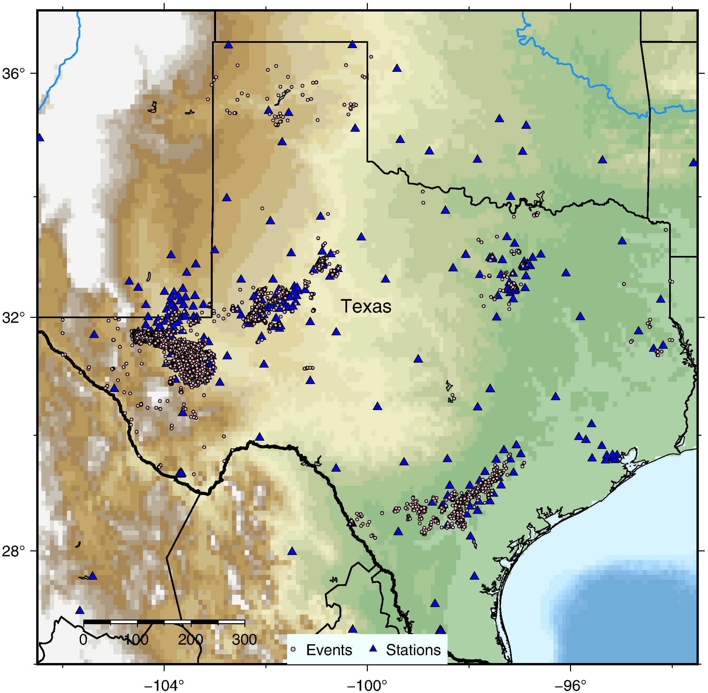
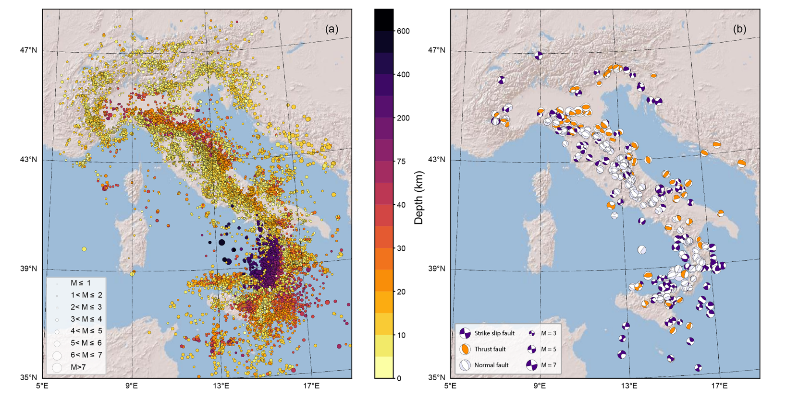

数据集概述
SeisPolarity 提供统一的接口来访问和处理多个地震极性数据集。所有数据集都以 HDF5 格式存储，以实现高效的存储和流式传输。
可用数据集
数据集 |
来源 |
大小 |
类别 |
格式 |
|---|---|---|---|---|
SCSN |
南加州地震网络 |
大 |
U/D/N |
HDF5 |
Txed |
德克萨斯地震数据集 |
中 |
U/D |
HDF5 |
DiTing |
中国地震台网 |
中 |
U/D/N |
HDF5 |
Instance |
全球地震数据 |
中 |
U/D/N |
HDF5 |
PNW |
太平洋西北地区 |
大 |
U/D/N |
HDF5 |
数据集
SCSN
南加州地震网络（SCSN）数据集包含来自南加州地震网络的带极性标签的地震波形。该数据集涵盖 2000-2020 年期间的地震事件，是经过人工标注的高质量数据集。

警告
数据集大小：waveforms.hdf5 ~660Gb，metadata.csv ~2.2Gb 针对极性数据集 SCSN 约 15 GB
引用
Cheng, Y., Ross, Z. E., Hauksson, E., Ben-Zion, Y. (2023). Refined earthquake focal mechanism catalog for southern California derived with deep learning algorithms. Journal of Geophysical Research: Solid Earth, 128, e2022JB025975. https://doi.org/10.1029/2022JB025975
Ross, Z. E., Meier, M.-A., Hauksson, E. (2018). P wave arrival picking and first-motion polarity determination with deep learning. Journal of Geophysical Research: Solid Earth, 123, 5405-5416. https://doi.org/10.1029/2018JB015510
Txed
德克萨斯地震数据集（TXED）是一个来自德克萨斯州的本地地震信号基准数据集。该数据集包含大量地震事件和噪声波形，是机器学习在地震学研究中的重要数据资源。
警告
数据集大小：waveforms.hdf5 ~70Gb，metadata.csv 120Mb
引用
Chen, Y., Savvaidis, A., Saad, O. M., Huang, G.-C. D., Siervo, D., O’Sullivan, V., McCabe, C., Uku, B., Fleck, P., Burke, G., Alvarez, N. L., Domino, J., & Grigoratos, I. (2024). TXED: The Texas Earthquake Dataset for AI. Seismological Research Letters, 95(6), 1-13. https://doi.org/10.1785/0220230327
DiTing
DiTing 数据集是一个大规模中国地震基准数据集，专门用于人工智能地震学研究。该数据集包含超过 64 万个高质量的 P 波初动极性标签，覆盖中国各地 1300 多个宽带和短周期地震台站。

引用
Zhao, M., Xiao, Z., Chen, S., & Fang, L. (2023). DiTing: A large-scale Chinese seismic benchmark dataset for artificial intelligence in seismology. Earthquake Science, 36(2), 84-94. https://doi.org/10.1016/j.eqs.2022.01.022
数据下载
数据集可通过以下地址进行申请下载：https://data.earthquake.cn/
Instance
INSTANCE 数据集是意大利国家地球物理和火山学研究所（INGV）整理的意大利地震波形数据集，专为机器学习应用设计。该数据集包含近 120 万个三分量波形迹线，是地震学研究的重要资源。
警告
数据集大小：
waveforms (counts) ~160Gb
waveforms (ground motion units) ~310Gb
引用
Michelini, A., Cianetti, S., Gaviano, S., Giunchi, C., Jozinović, D., & Lauciani, V. (2021). INSTANCE – The Italian Seismic Dataset For Machine Learning. Earth System Science Data, 13, 5509–5542. https://doi.org/10.5194/essd-13-5509-2021
PNW
太平洋西北地区（PNW）数据集是一个机器学习就绪的精选数据集，包含来自太平洋西北地区的多种地震信号。该数据集由太平洋西北地震网络整理，涵盖地震、爆炸、噪声等多种地震事件类型。

引用
Ni, Y., Hutko, A., Skene, F., Denolle, M., Malone, S., Bodin, P., Hartog, R., & Wright, A. (2023). Curated Pacific Northwest AI-ready Seismic Dataset. Seismica, 2(1), 368. https://doi.org/10.26443/seismica.v2i1.368
加载数据集
自动下载
SeisPolarity 可以自动下载数据集：
1from seispolarity import get_dataset_path, WaveformDataset
2
3# 从 Hugging Face 下载（默认）
4data_path = get_dataset_path("SCSN", "train", cache_dir="./datasets")
5
6# 或使用 ModelScope（推荐中国用户使用）
7data_path = get_dataset_path("SCSN", "train", use_hf=False)
从本地文件加载
1from seispolarity import WaveformDataset
2
3# 磁盘流式传输（适用于大型数据集）
4dataset = WaveformDataset(
5 path="data/scsn_train.hdf5",
6 name="SCSN_Train",
7 preload=False
8)
9
10# RAM 预加载（适用于小型数据集）
11dataset = WaveformDataset(
12 path="data/scsn_train.hdf5",
13 name="SCSN_Train",
14 preload=True
15)
数据集 API
WaveformDataset
加载波形数据的主要类。
1from seispolarity import WaveformDataset
2
3dataset = WaveformDataset(
4 path="data.hdf5", # HDF5 文件路径
5 name="SCSN", # 数据集名称
6 preload=False, # 是否预加载到 RAM
7 data_key="X", # 波形的 HDF5 键
8 label_key="Y", # 标签的 HDF5 键
9 p_pick_position=300, # P 波到达位置
10 pick_key="p_pick", # 使用p_pick作为P波到达点
11 crop_left=200, # P-pick 之前的采样点
12 crop_right=200, # P-pick 之后的采样点
13 allowed_labels=[0, 1, 2] # 允许的标签（0: Up, 1: Down, 2: Unknown）
14)
数据格式
波形以以下结构存储在 HDF5 文件中：
waveforms.hdf5
├── X # 波形数据 (N_samples, N_channels)
├── Y # P值标签 (N_samples,)
├── Z # 清晰度clarity (只有ditingmotion需要)
├── metadata # 附加元数据（可选）
└── ...
标签编码
0: Up（正极性）
1: Down（负极性）
2: Unknown
DataLoader
创建用于训练的 PyTorch DataLoader：
1loader = dataset.get_dataloader(
2 batch_size=1024,
3 num_workers=4,
4 shuffle=True,
5 pin_memory=True
6)
数据检查
基本统计
1from seispolarity import WaveformDataset
2
3dataset = WaveformDataset(path="data.hdf5", name="SCSN")
4
5# 获取数据集统计信息
6print(f"总样本数: {len(dataset)}")
7print(f"标签分布: {dataset.label_distribution}")
8print(f"波形形状: {dataset.waveform_shape}")
多数据集训练
组合多个数据集：
1from seispolarity import MultiWaveformDataset
2
3# 创建多个数据集
4dataset1 = WaveformDataset(path="scsn.hdf5", name="SCSN")
5dataset2 = WaveformDataset(path="txed.hdf5", name="Txed")
6
7# 组合它们
8combined = MultiWaveformDataset([dataset1, dataset2])
平衡采样
对于标签不平衡的数据集，使用平衡采样：
1from seispolarity import BalancedPolarityGenerator
2
3generator = BalancedPolarityGenerator(
4 dataset,
5 strategy="polarity_inversion" # 或 "min_based"
6)
7loader = generator.get_dataloader(batch_size=256)
下载位置
数据集可以从以下位置下载：
Hugging Face:
https://huggingface.co/datasets/chuanjun1978/Seismic-AI-DataModelScope:
https://www.modelscope.cn/datasets/chuanjun/Seismic-AI-Data/（推荐中国用户使用）
更多详细信息请参阅 安装指南。